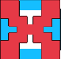

<body>
  <div id="root"></div>
  <script type="module" src="/src/main.jsx"></script>

  <div class="l-container">
    <!-- Legend Section -->
    <div class="legend-container">
      <div class="legend-item">
        <div class="legend-icon circle">O</div>
        <span>Alive</span>
      </div>
      <div class="legend-item">
        <div class="legend-icon cross">X</div>
        <span>Dead</span>
      </div>
      <div class="legend-item">
        <div class="legend-icon b"></div>
        <span>Block</span>
      </div>
      <div class="legend-item">
        <div class="legend-icon">
          
        </div>
        <span>Superposition</span>
      </div>
    </div>
  </div>

  </div>
  </div>
  <style>
    /* Container for the legend */
    .l-container {
      display: flex;
      flex-direction: column;
      align-items: flex-start;
      text-align: left;
      padding: 20px;
      border-radius: 8px;
      width: 200px;
      max-width: 100%;
      box-shadow: 15px 15px 50px rgba(0, 255, 255, 0.5);
      border: 3px solid white;
      justify-content: flex-start;
      margin-left: 100px;
    }

    .legend-container {
      display: flex;
      flex-direction: column; /* Stack legend items vertically */
      gap: 16px; /* Space between legend items */
    }

    .legend-item {
      display: flex;
      align-items: center; /* Align icon and text vertically */
      gap: 10px; /* Space between icon and text */
      font-size: 14px; /* Adjust font size for better fit */
    }

    .legend-icon {
      width: 20px;
      height: 20px;
      display: flex;
      justify-content: center;
      align-items: center;
      border-radius: 50%;
      background-color: transparent;
    }

    /* Custom icon styles for alive, dead, and block */
    /* .legend-icon.circle {
      background-color: #4caf50;
    }

    .legend-icon.cross {
      background-color: #f44336;
      border-radius: 0; 
      transform: rotate(45deg);
    }

    .legend-icon.b {
      background-color: #000000;
    } */

    /* Superposition icon image styling */
    .superposition-img {
      width: 16px;
      height: 16px;
      object-fit: contain; /* Ensure image scales without distortion */
    }

  </style>
</body>
